Sociology
Plots of the
Sociology department
snet1_g <- igraph::graph_from_adjacency_matrix(snet1, mode = c("undirected"))
snet2_g <- igraph::graph_from_adjacency_matrix(snet2, mode = c("undirected"))
snet3_g <- igraph::graph_from_adjacency_matrix(snet3, mode = c("undirected"))
socdef_df$twitter_dum[socdef_df$id==36]<- 1
socdef_df$twitcol <- ifelse(socdef_df$twitter_dum == 0, "#56B4E9", "#66ff99")
#Dit zou ik nog even moeten checken of dit klopt, want er lijken ineens ties weg te vallen door die coördinaten toe te voegen?
l <- igraph::layout_with_mds(snet1_g)
l[14,1] <- 0
l1 <- igraph::layout_with_mds(snet2_g)
l1[14,1] <- 0
l2 <- igraph::layout_with_mds(snet3_g)
l2[14,1] <- 0
#Wat wil ik met de nummers in de plot, moet ik die nog veranderen in namen? Maar wil het graag anoniem houden.
plot(snet1_g, vertex.color = socdef_df$twitcol, vertex.size=socdef_df$ki, vertex.size = 10, vertex.frame.color = "gray",
vertex.label.color = "black", vertex.label.family = "Helvetica", vertex.label.cex = 0.7, vertex.label.dist = 0.8,
edge.curved = 0.2, edge.arrow.size = 0.5, layout=l)
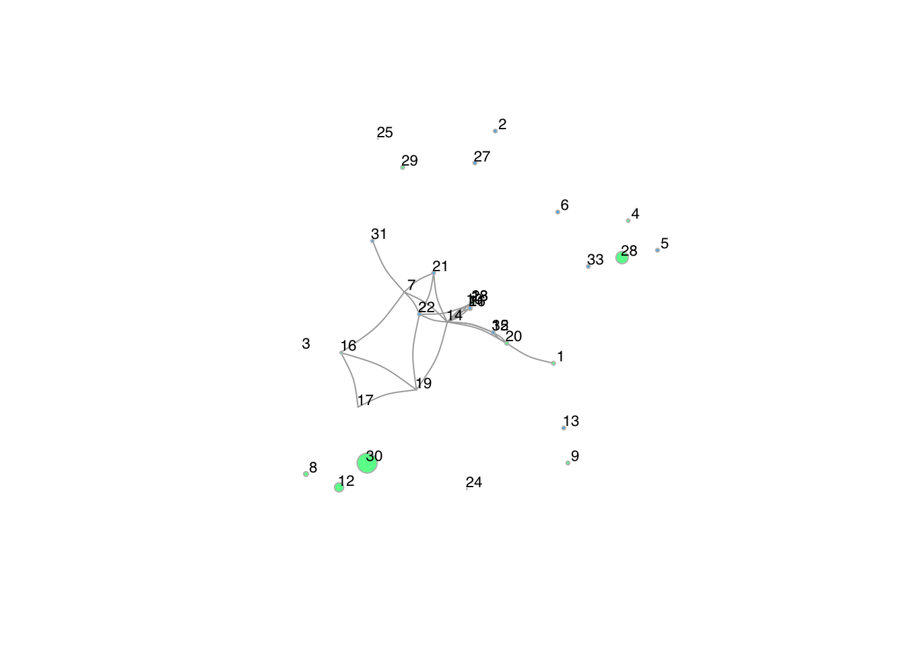
plot(snet2_g, vertex.color = socdef_df$twitcol, vertex.size=socdef_df$ki, vertex.size = 10, vertex.frame.color = "gray",
vertex.label.color = "black", vertex.label.family = "Helvetica", vertex.label.cex = 0.7, vertex.label.dist = 0.8,
edge.curved = 0.2, edge.arrow.size = 0.5, layout=l1)
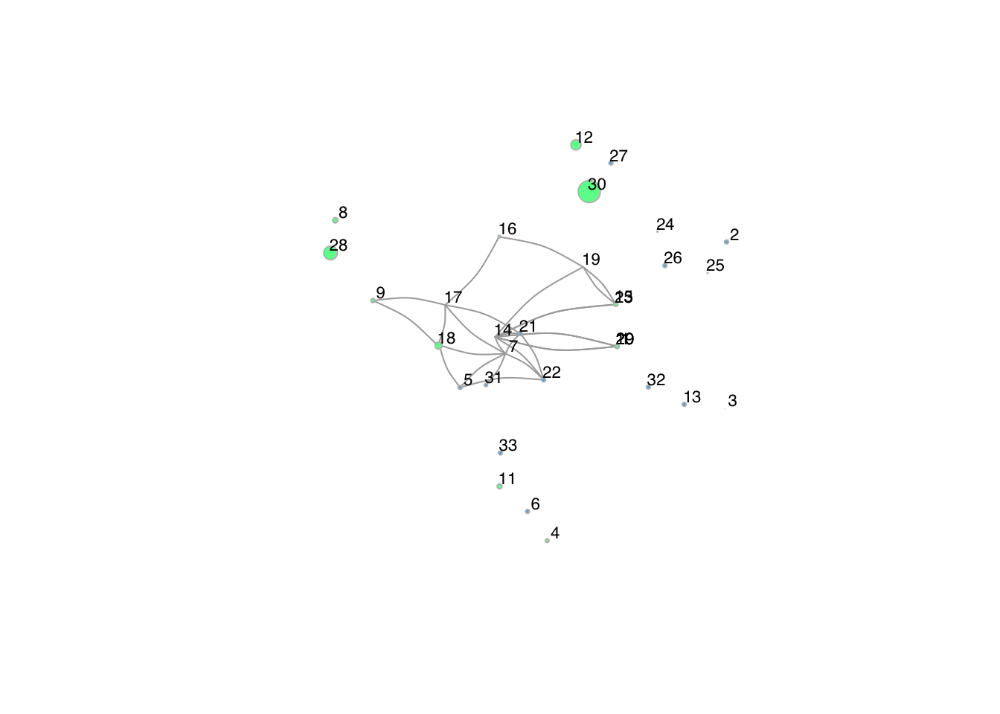
plot(snet3_g, vertex.color = socdef_df$twitcol, vertex.size=socdef_df$ki, vertex.size = 10, vertex.frame.color = "gray",
vertex.label.color = "black", vertex.label.family = "Helvetica", vertex.label.cex = 0.7, vertex.label.dist = 0.8,
edge.curved = 0.2, edge.arrow.size = 0.5, layout=l2)
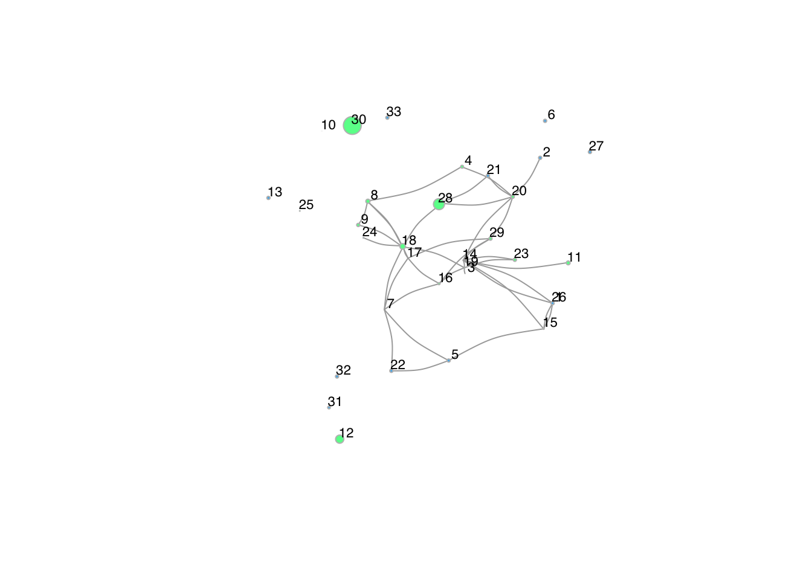
From the plots of the Sociology department it’s visible that there
are quite a lot of co-publications within the network of Sociology. The
first plot (of the year 2016-2017) shows that many scientists did not
co-publish yet, but this increased over the years. This can be explained
by the fact that a number of (younger) scientists did not yet work at
the department in e.g. 2016, which results in no co-publication tie.
Since node 14 is the most “productive” in the sense of co-publishing
with others, I have put this node central in all the plots to show the
evolution. This is an older scientist who has had more opportunities to
publish with other individuals of the staff.
Another conclusion that can be drawn from the plot, is that
individuals with a higher k-index do not have more co-publication ties.
As I based the vertex size on the k-index, a higher k-index results in a
larger vertex in the plot. It is visible that node 28 and 30 have the
highest k-index, but this did not result in co-publications for node 30.
For node 28, there is an increase of 3 co-publication ties when
comparing the latter 2 plots. This could signal that this scientist is
attractive to others because of the k-index, but this conclusion cannot
be drawn yet from this plot alone. Therefore, this plot does not hint at
selection effects based on k-index.
Descriptives of the
Sociology network
sdegree <- igraph::degree(snet1_g)
sdegree2 <- igraph::degree(snet2_g)
sdegree3 <- igraph::degree(snet3_g)
#par(mfrow=c(3,1))
hist(sdegree, col="#99d6ff")
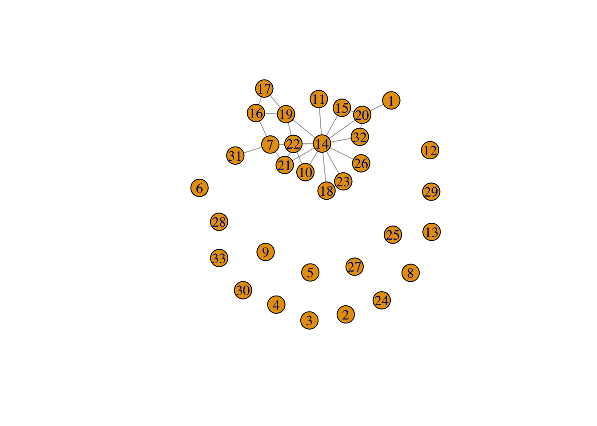
hist(sdegree2, col="#99d6ff")
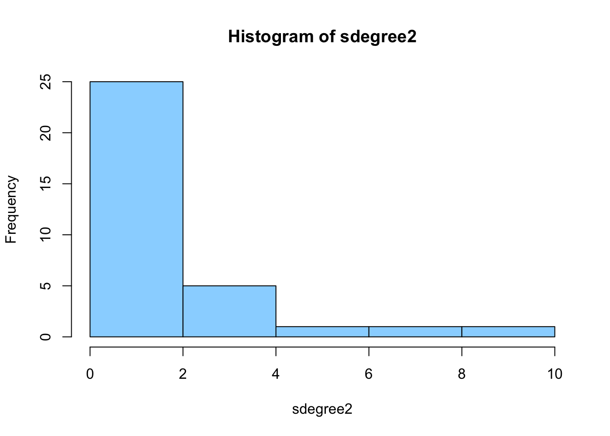
hist(sdegree3, col="#99d6ff")
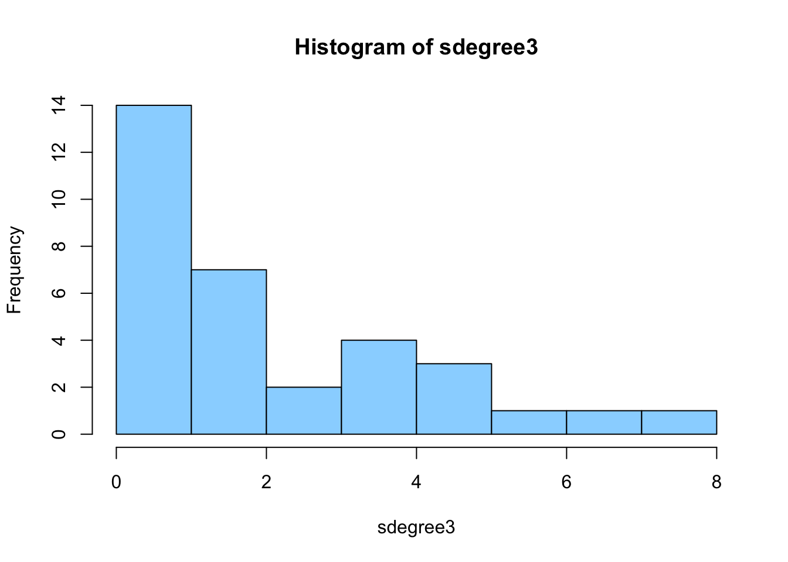
In the histograms above it is shown that the degree of the network is
right-skewed. This means that most scientists in the network don’t have
many other scientists within the department they co-published with. This
is strongest for first the histogram, showing the first wave
(2016-2017). In the following year, there still is a right-skewed
distribution of the degrees, but there are a little more staff members
in the tail of the distribution, meaning that these scientists have
quite a lot of copublication ties. This occurs the most strongly in the
histogram of the last years (2020 until now).
igraph::dyad.census(snet1_g)
#> $mut
#> [1] 26
#>
#> $asym
#> [1] 0
#>
#> $null
#> [1] 502
igraph::triad.census(snet1_g)
#> [1] 4750 0 616 0 0 0 0 0 0 0 80 0 0 0 0 10
igraph::edge_density(snet1_g)
#> [1] 0.04924242
igraph::dyad.census(snet2_g)
#> $mut
#> [1] 27
#>
#> $asym
#> [1] 0
#>
#> $null
#> [1] 501
igraph::triad.census(snet2_g)
#> [1] 4715 0 656 0 0 0 0 0 0 0 74 0 0 0 0 11
igraph::edge_density(snet2_g)
#> [1] 0.05113636
igraph::dyad.census(snet3_g)
#> $mut
#> [1] 38
#>
#> $asym
#> [1] 0
#>
#> $null
#> [1] 490
igraph::triad.census(snet3_g)
#> [1] 4398 0 949 0 0 0 0 0 0 0 98 0 0 0 0 11
igraph::edge_density(snet3_g)
#> [1] 0.0719697
Regarding density and dyads in the network, there are 26 dyads in the
first wave. The edge density is 0.049, which means that the number of
edges existing in the network is relatively low compared to the the
maximum number of edges there could possibly be. In the second wave,
there is an increase of 1 dyad, and the edge density also has increased
slightly towards a number of 0.051. In the last wave, there are 38 dyads
and the edge density has increased to 0.072. Regarding the triad census
[@davis1967structure], there are first 10
and then 11 complete triads, and first a decrease and then an increase
of triads with one central node. Still, the triad 003 (with 3 null
relations) occurs most. All in all, the co-publications within the
network of sociology have increased, and over the years, the scientists
at the department have used more of their opportunities to collaborate
with members within the network.
igraph::transitivity(snet1_g)
#> [1] 0.2727273
igraph::transitivity(snet2_g)
#> [1] 0.3084112
igraph::transitivity(snet3_g)
#> [1] 0.2519084
Last but not least, the transitivity effect shows whether co-authors
of co-authors become co-authors. For this network, no linear change can
be observed. In the first wave, there is a transitivity number of 0.27.
If one staff member A is connected to staff member B and staff member C,
the probability is 0.27 that staff member B and C will also co-publish.
In the second wave, we see that this probability has even increased to
0.308. In the last wave, the transitivity number is the lowest.
Possibly, the fact that there are more mebers in the networks could
increase the opportunities to co-publish with others, not depending on
co-authors of co-authors.
K-index at the
Sociology department
twsocbar <- ggplot2:::ggplot(socdef_df, aes(factor(twitter_dum), fill = factor(twitter_dum))) + geom_bar()
twsocbar <- twsocbar + scale_fill_manual(values=c("#56B4E9", "#66ff99"))
ggplotly(twsocbar)
Before diving into the k-index, it is insightful to see how many of
the scientist at the department of Sociology have Twitter. In the above
(interactive) graph, it is shown that 13 scientist do not have Twitter,
while 20 scientists do have Twitter.
sel <- socdef_df$twitter_dum==1
hist(socdef_df$ki[sel], col="lightblue", border="darkblue")

The above histogram shows the distribution of the k-index of
scientists at the Sociology department. The distribution is
right-skewed: Most scientists have a k-index between 0 and 2, and a few
scientists have a high index. A few staff members have a k-index that
would be categorized as “Kardashian Scientist” (Hall, 2014)
modelki <- lm(ki ~ gender + dutch + pub_first, data=socdef_df)
summary(modelki)
#>
#> Call:
#> lm(formula = ki ~ gender + dutch + pub_first, data = socdef_df)
#>
#> Residuals:
#> Min 1Q Median 3Q Max
#> -3.5728 -0.9822 -0.0788 0.9981 4.8327
#>
#> Coefficients:
#> Estimate Std. Error t value Pr(>|t|)
#> (Intercept) -321.56977 95.80579 -3.356 0.00222 **
#> gendermale 2.08062 0.75754 2.747 0.01024 *
#> dutch -2.63707 0.92753 -2.843 0.00810 **
#> pub_first 0.16104 0.04749 3.391 0.00203 **
#> ---
#> Signif. codes: 0 '***' 0.001 '**' 0.01 '*' 0.05 '.' 0.1 ' ' 1
#>
#> Residual standard error: 1.896 on 29 degrees of freedom
#> Multiple R-squared: 0.4394, Adjusted R-squared: 0.3814
#> F-statistic: 7.577 on 3 and 29 DF, p-value: 0.0006882
Lastly, it is insightful to see to what extent the k-index is
predicted by other factors. The above linear regression teaches us that
male scientist of Sociology have a significantly higher k-index than
female staff members. It is also visible that Dutch scientists have a
significantly lower k-index than non-Dutch scientists. Lastly, age is
significantly related to the k-index: as age decreases, the k-index
increases. Younger individuals thus have a higher k-index than older
individuals. These effects can also be seen in the (interactive) graph
below.
regplotsoc <- ggplot(socdef_df, mapping = aes(x = pub_first, y = ki, color=gender)) +
geom_line()
ggplotly(regplotsoc)
Data science
dnet1 <- dnet_array[ ,, 1]
dnet2 <- dnet_array[ ,, 2]
dnet3 <- dnet_array[ ,, 3]
diag(dnet1) <- 0
diag(dnet2) <- 0
diag(dnet3) <- 0
Plots of the Data
Science department
dnet1_g <- igraph::graph_from_adjacency_matrix(dnet1, mode = c("undirected"))
dnet2_g <- igraph::graph_from_adjacency_matrix(dnet2, mode = c("undirected"))
dnet3_g <- igraph::graph_from_adjacency_matrix(dnet3, mode = c("undirected"))
datadef_df$twitcol <- ifelse(datadef_df$twitter_dum == 0, "#56B4E9", "#66ff99")
#Dit zou ik nog even moeten checken of dit klopt, want er lijken ineens ties weg te vallen door die coördinaten toe te voegen?
# l <- igraph::layout_with_mds(snet1_g)
# l[14,1] <- 0
# l1 <- igraph::layout_with_mds(snet2_g)
# l1[14,1] <- 0
# l2 <- igraph::layout_with_mds(snet3_g)
# l2[14,1] <- 0
#Wat wil ik met de nummers in de plot, moet ik die nog veranderen in namen? Maar wil het graag anoniem houden.
plot(dnet1_g, vertex.color = datadef_df$twitcol, vertex.size=datadef_df$ki, vertex.size = 10, vertex.frame.color = "gray",
vertex.label.color = "black", vertex.label.family = "Helvetica", vertex.label.cex = 0.7, vertex.label.dist = 0.8,
edge.curved = 0.2, edge.arrow.size = 0.5)
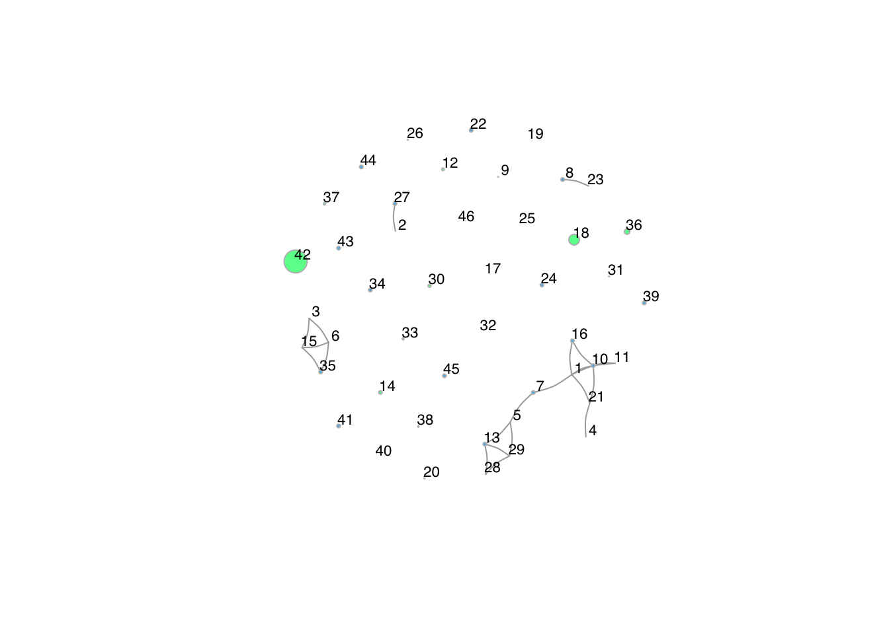
plot(dnet2_g, vertex.color = datadef_df$twitcol, vertex.size=datadef_df$ki, vertex.size = 10, vertex.frame.color = "gray",
vertex.label.color = "black", vertex.label.family = "Helvetica", vertex.label.cex = 0.7, vertex.label.dist = 0.8,
edge.curved = 0.2, edge.arrow.size = 0.5)
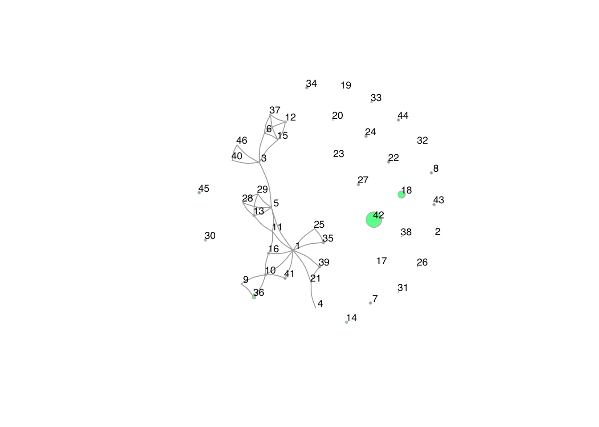
plot(dnet3_g, vertex.color = datadef_df$twitcol, vertex.size=datadef_df$ki, vertex.size = 10, vertex.frame.color = "gray",
vertex.label.color = "black", vertex.label.family = "Helvetica", vertex.label.cex = 0.7, vertex.label.dist = 0.8,
edge.curved = 0.2, edge.arrow.size = 0.5)
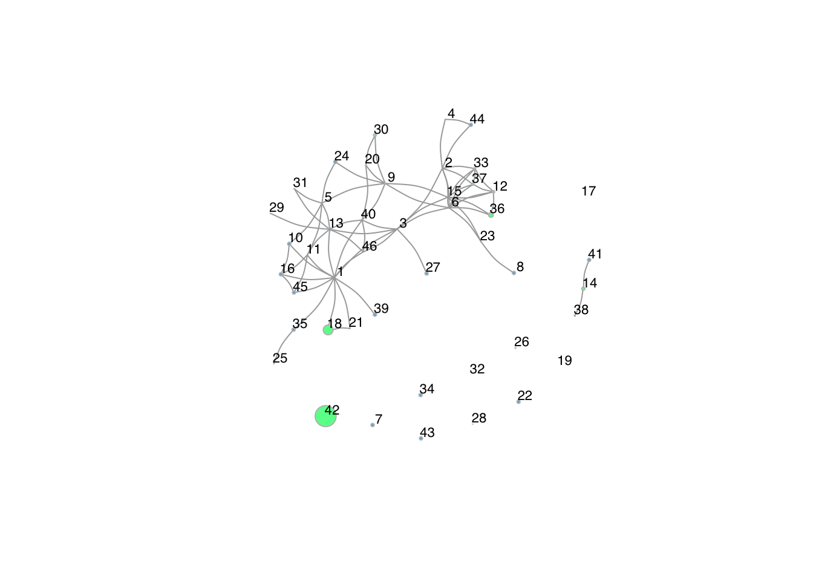
In the network plots of Data Science, it shows that during the year
2016-2017 there were not many co-publications. Just like at the
Sociology department, it is likely that a high number of scientists did
not work at the department yet. In the years 2018-2019, there is a
strong increase in the co-publications of the staff members of Data
Science. Node 1, 3 and 5 seem to have a central role in the network,
with the highest number of edges, and thus the most co-pulications with
other scientists within the department. In the last plot, again an
increase in co-publications is visible. Node 1, 3 and 5 still have a
central role in the network, but there now are other nodes with a
relative high number of co-publications as well.Similarly to the
Sociology department, there are only a few nodes with a high k-index
(shown by the largest vertex size), and it does not seem as if these
scientists are especially attractive to others to co-publish an
article.
Descriptives of the
Data Science network
ddegree1 <- igraph::degree(dnet1_g)
hist(ddegree1, col="purple")
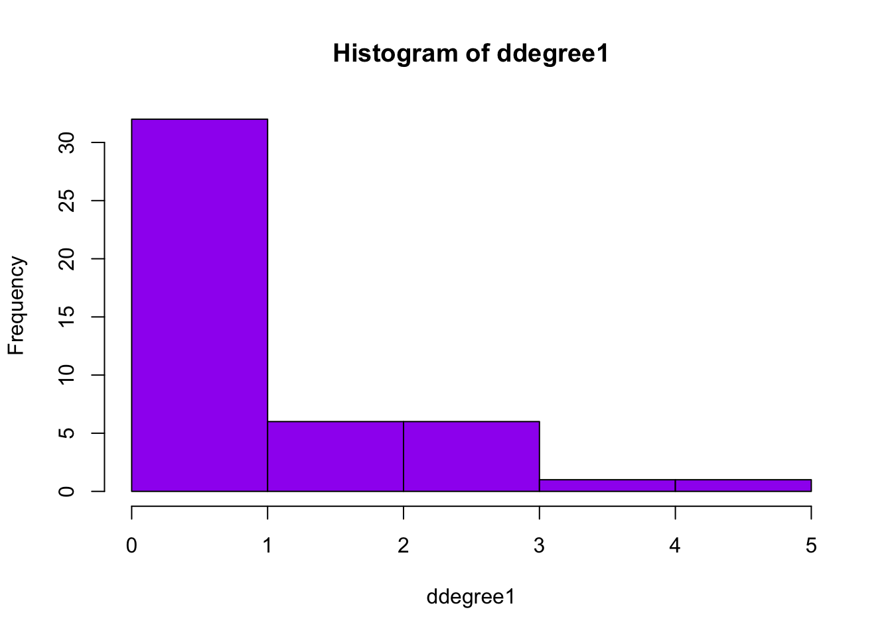
ddegree2 <- igraph::degree(dnet2_g)
hist(ddegree2, col="purple")
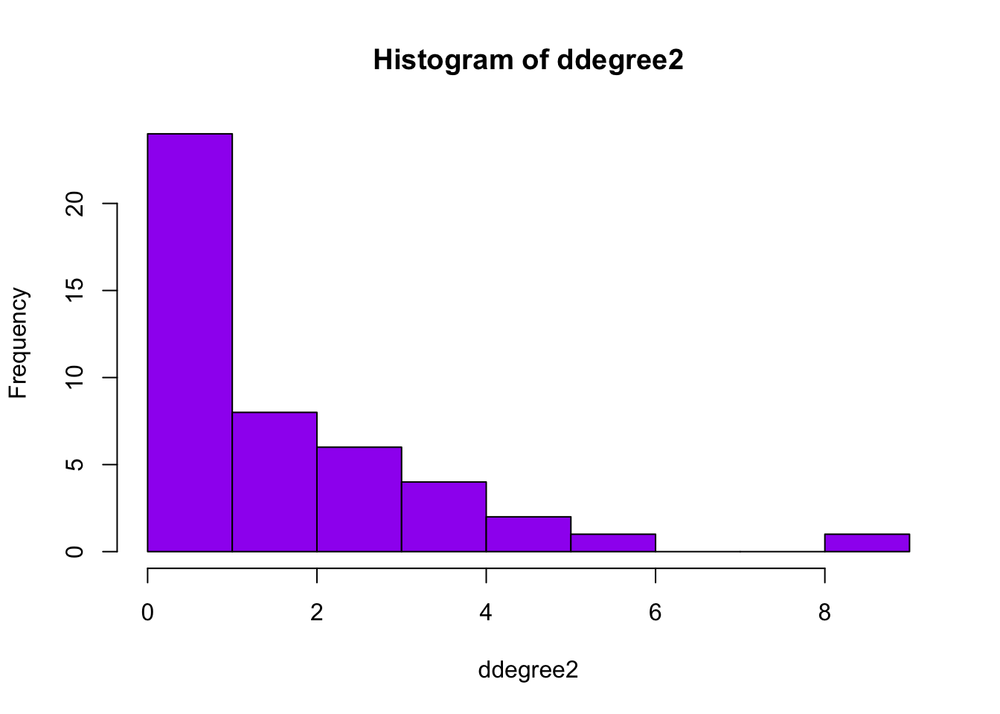
ddegree3 <- igraph::degree(dnet3_g)
hist(ddegree3, col="purple")
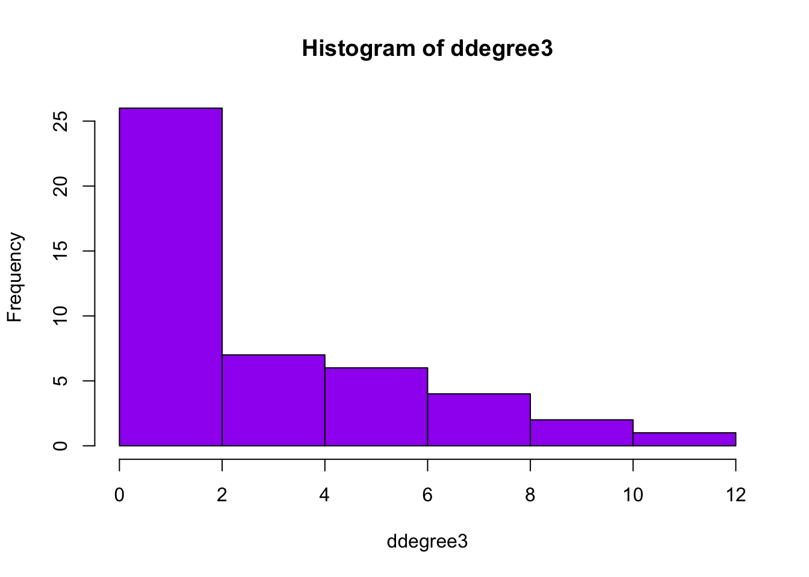
Similarly to Sociology, the Data Science department shows a right-skewed
distribution of the degrees. In the first wave, most scientists had not
co-published, or only little. In the histogram of the second wave, it
can be observed that the degrees remain skewed to the right.
Furthermore, it is visible that one scientist has more than 8
copublications, and that in general, the number of outdegrees increased.
However, most individuals still have no co-publications. In the last
histogram, more scientists are in the tail, as also observed at the
Sociology department. Furthermore, there are even staff scientist with
10-11 copublications. This is a higher number of copublications than
observed at the Sociology department.
igraph::dyad.census(dnet1_g)
#> $mut
#> [1] 22
#>
#> $asym
#> [1] 0
#>
#> $null
#> [1] 1013
igraph::triad.census(dnet1_g)
#> [1] 14245 0 909 0 0 0 0 0 0 0 19 0 0 0 0 7
igraph::edge_density(dnet1_g)
#> [1] 0.02125604
igraph::dyad.census(dnet2_g)
#> $mut
#> [1] 38
#>
#> $asym
#> [1] 0
#>
#> $null
#> [1] 997
igraph::triad.census(dnet2_g)
#> [1] 13611 0 1484 0 0 0 0 0 0 0 67 0 0 0 0 18
igraph::edge_density(dnet2_g)
#> [1] 0.03671498
igraph::dyad.census(dnet3_g)
#> $mut
#> [1] 70
#>
#> $asym
#> [1] 0
#>
#> $null
#> [1] 965
igraph::triad.census(dnet3_g)
#> [1] 12395 0 2537 0 0 0 0 0 0 0 201 0 0 0 0 47
igraph::edge_density(dnet3_g)
#> [1] 0.06763285
Looking at the dyad census and density, the number of dyads in
2016-2017 counts 22. The edge density is 0.0212. Both of these numbers
are lower than at the Sociology department. In 2018-2019, the number of
dyads has increased to 38 and the edge density has increased to 0.037.
This is still lower than the edge density within the sociology
department in the same years. In the last years, there are 70 dyads and
the edge density increased towards a number of 0.068. This remains a
little lower than the edge density of the Sociology department at that
time. With regard to the triads, we see a similar pattern as at the
Sociology department. However, there are more complete triads at Data
Science, and this number has increased rather strongly over the
years.
igraph::transitivity(dnet1_g)
#> [1] 0.525
igraph::transitivity(dnet2_g)
#> [1] 0.446281
igraph::transitivity(dnet3_g)
#> [1] 0.4122807
Regarding the transitivity, this has decreased at Data Science over
the years. In the first period, the probability that scientist B and C -
both as co-authors of scientist A - would co-publish was 0.52. In the
next year, this decreased to a 45% chance, while in the last year this
chance is 41,2%. Still, this is a higher number than observed at the
Sociology department. Also, there is a linear decrease at the department
of Data Science, while at the Sociology department no linear trend could
be observed. In conclusion, staff members at Data Science are more
likely to co-publish with co-authors of their co-authors than at
Sociology, which is in line with the larger increase in triads.
K-index at the
department of Data Science
twdatbar <- ggplot2:::ggplot(datadef_df, aes(factor(twitter_dum), fill = factor(twitter_dum))) + geom_bar()
twdatbar <- twdatbar + scale_fill_manual(values=c("#56B4E9", "#66ff99"))
ggplotly(twdatbar)
At the Data Science department, the majority of scientist has a
Twitter account: 30 scientists have a Twitter account while 16 do not
have one.
sel2 <- datadef_df$twitter_dum==1
hist(datadef_df$ki[sel2], col="red")
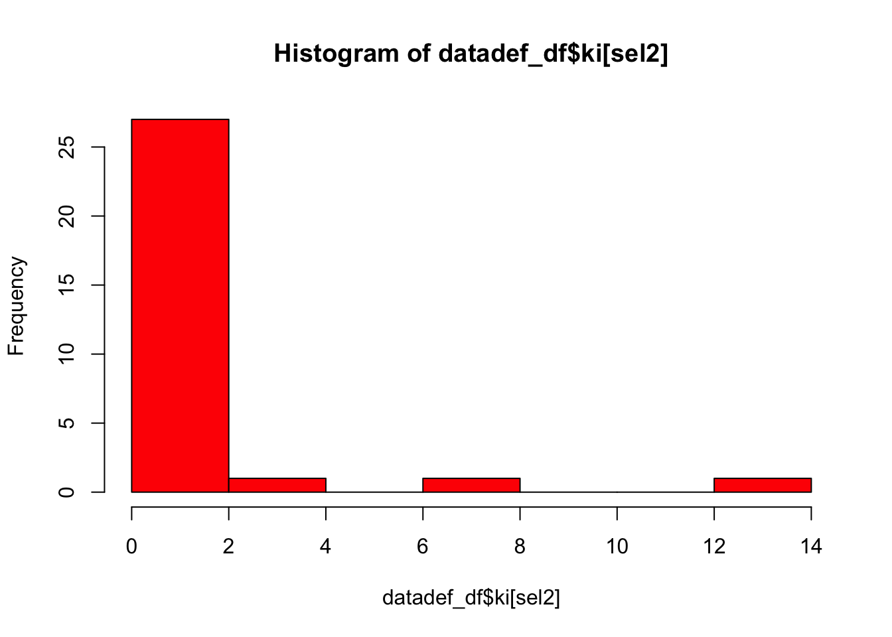
The histogram shows that at the Data Science department, the
distribution of the k-index is even more skewed than at the Sociology
department. Most scientist have a k-index between 0 and 1, while only a
few scientists have a k-index higher than that. Approximately two
scientist would be categorized as “Kardashian Scientists” by Hall
(2014)
modelki2 <- lm(ki ~ gender + dutch + pub_first, data=datadef_df)
summary(modelki2)
#>
#> Call:
#> lm(formula = ki ~ gender + dutch + pub_first, data = datadef_df)
#>
#> Residuals:
#> Min 1Q Median 3Q Max
#> -1.5814 -0.9685 -0.4150 0.2484 11.7131
#>
#> Coefficients:
#> Estimate Std. Error t value Pr(>|t|)
#> (Intercept) -127.56740 61.00338 -2.091 0.0426 *
#> gendermale -0.01333 0.70774 -0.019 0.9851
#> dutch -0.14260 0.72191 -0.198 0.8444
#> pub_first 0.06392 0.03033 2.107 0.0411 *
#> ---
#> Signif. codes: 0 '***' 0.001 '**' 0.01 '*' 0.05 '.' 0.1 ' ' 1
#>
#> Residual standard error: 2.116 on 42 degrees of freedom
#> Multiple R-squared: 0.09806, Adjusted R-squared: 0.03364
#> F-statistic: 1.522 on 3 and 42 DF, p-value: 0.2227
At the Data Science department, the k-index is predicted differently
than at the Sociology department when looking at the linear regression
above. For the Data Science department, the effect of gender and
ethnicity are not significant. Age is a significant predictor of the
k-index. The younger the scientist, the higher the k-index. In the
(interactive) plot below, it is also visible that gender and age are
lesser determinants of the k-index than at the Sociology department.
# Dit nog bij assigning gender neerzetten (webscraping)
datadef_df$gender[datadef_df$id==261] <- "male"
datadef_df$gender[datadef_df$id==273] <- "male"
regplotdat <- ggplot(datadef_df, mapping = aes(x = pub_first, y = ki, color=gender)) +
geom_line()
ggplotly(regplotdat)
Comparison of the two
departments
When comparing the two departments, there are some things worth
noting. Regarding the network structure, the density of the
co-publication network of Sociology is higher than that of the Data
Science department. Within Sociology, scientists thus co-publish more
with others of the same department, but at both cases the density is
low. This shows that at both departments the co-publication network is
rather sparse. This is not strange, as within academia it is not always
possible to co-publish with any scientist in the network, as they might
have different research interests. The transitivity differs as well
between the two departments. The transitivity is higher at Data Science
than at Sociology. This signals that it is more common among Data
Scientists to publish articles with co-authors of co-authors.
With regard to Twitter and the k-index, the descriptives show that at
both departments, the majority has a Twitter account. At the Data
Science department, most scientists have a very low k-index with some
exceptions, while at the Sociology department there are a few more
scientists with a k-index above 1. This could show that for
Sociologists, Twitter activity may be considered as more important than
for Data Scientists, and for Sociologists the actual scientific output
in terms of articles might be less important. Possibly, this could be
explained by the fact that Sociologists would like to engage with
society to share their research, as this society is often the research
topic. However, for both departments, there are no clear hints that
these scientists with a high k-index have more or less co-publications
than scientists with a lower k-index.
